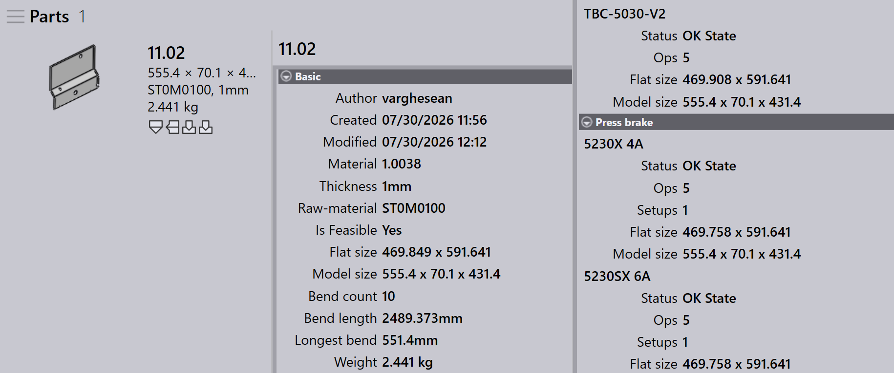

Panel de utillaje
Esta sección explica las acciones relacionadas con el utillaje, como Export outputs, Check Tooling, Suppress Tooling, Set as Base-Flat…, Copy Tooling, y otras opciones utilizadas para gestionar las instancias de utillaje.

|
|
Export Outputs
Esta opción exporta la salida de la pieza al destino configurado en Factory Settings. (Consulte Bend Settings y Cut Settings)
Solo se exportan los utillajes asociados a la operación de utillaje seleccionada, no toda la pieza.
| Los archivos exportados dependen del tipo de operación. Para las operaciones Bend y Fold, se generan archivos NC e informes. Para las operaciones Cut y Punch, solo se exportan los archivos de pieza. |
Check Tooling
-
Si hay un cambio en los ajustes CAM o se pierde una herramienta de plegado, no necesita volver a aplicar el utillaje a la pieza.
-
En su lugar, utilice Check Tooling para validar el utillaje existente sin realizar ningún cambio.
-
Si la validación falla, el estado de utillaje de esa instancia se actualiza y se eliminan los archivos de salida relacionados.
-
Check Tooling también detecta las piezas cuyos errores se anularon previamente de forma manual mediante Ignore Errors, y actualiza su estado a error si es necesario.
Copy tooling
Copy tooling le permite aplicar rápidamente el utillaje de plegado de una solución a otras, ahorrando tiempo y esfuerzo.
Esto copia la configuración de punzón, secuencia y tope trasero de un utillaje de referencia (solución) seleccionado e intenta aplicar los mismos ajustes a todas las demás soluciones.
-
Si la configuración copiada es viable para una máquina de destino, se guarda y se utiliza.
-
Si la configuración no es viable, el utillaje original de esa máquina permanece sin cambios.
Por ejemplo, puede tener diferentes utillajes para diferentes máquinas:
-
Aquí, la máquina 5230X 4A utiliza un punzón de cuello de cisne, la máquina 5230SX 6A utiliza un punzón puntiagudo.

Cuando utiliza Copy Tooling… en la máquina 5230X 4A, intenta copiar la configuración de cuello de cisne a todas las demás máquinas.

Los mismos ajustes de punzón, secuencia y tope trasero se aplican siempre que es posible. Si la configuración copiada no se puede utilizar, el utillaje original permanece sin cambios.

Tras aplicar copy tooling, la configuración de cuello de cisne se ha aplicado correctamente a todas las demás máquinas donde es viable.
Set as Base-Flat…
La función Set as Base-Flat… define qué utillaje de plegado o plegado con paneladora se utiliza como tamaño plano de referencia para generar soluciones de corte. Cuando un utillaje se marca como Base-Flat, TruSmartCAM actualiza el tamaño plano de la pieza en función de esa máquina y regenera las soluciones de corte en consecuencia. Los utillajes Base-Flat se muestran con un borde azul en la interfaz.
Diferentes máquinas de plegado pueden producir ligeras variaciones en el tamaño plano para la misma pieza. Cuando establece un utillaje como Base-Flat, TruSmartCAM utiliza el tamaño plano de esa máquina como referencia principal y recalcula automáticamente las soluciones de corte.
Aquí podemos ver diferentes tamaños planos para la misma pieza en varias máquinas:

En este ejemplo, el utillaje 5230X 4A se establece como Base-Flat, y el tamaño plano actualizado se aplica en las propiedades de la pieza:

Selección automática de base-flat
Cuando el ajuste de fábrica Apply flat correction during bending está habilitado:

-
TruSmartCAM establece automáticamente el utillaje de plegado (que contiene la tabla de longitud máxima de plegado) como Base-Flat durante la importación de la pieza.
-
Si el utillaje de plegado seleccionado encuentra un error o no es viable, TruSmartCAM cambia de forma inteligente y establece otro utillaje de plegado válido como Base-Flat. Esto garantiza que la referencia de tamaño plano y las soluciones de corte permanezcan siempre coherentes y válidas sin intervención manual.
Gestión mejorada de base-flat
TruSmartCAM ofrece opciones de Base-Flat en el cuadro de diálogo Save to Praxis al guardar las modificaciones del utillaje de plegado o plegado con paneladora. Estas opciones aparecen solo para utillajes en estado OK y garantizan que el tamaño plano y las soluciones de corte se mantengan precisos.
Set as Base-Flat and calculate cutting solution
Esta opción se utiliza para marcar un utillaje como Base-Flat por primera vez y generar automáticamente la solución de corte correspondiente.
Aparece cuando:
-
El utillaje no está marcado actualmente como Base-Flat.
-
El usuario ha desprotegido el utillaje para editarlo y está guardando los cambios.

Para utilizar esta opción, desproteja el utillaje de plegado o plegado con paneladora y realice las modificaciones necesarias, como cambios en los parámetros de plegado o en el tamaño plano. Pulse Ctrl+S para guardar los cambios. En el cuadro de diálogo Save to Praxis, elija Set as Base-Flat and calculate cutting solution y haga clic en OK. TruSmartCAM establecerá el utillaje como Base-Flat y generará la solución de corte utilizando el tamaño plano actualizado.
Update the base-flat and re-calculate cutting solution
Esta opción se utiliza cuando el utillaje ya está marcado como Base-Flat y se ha editado, requiriendo que el tamaño plano y las soluciones de corte se regeneren.
Aparece cuando:
-
El utillaje ya está marcado como Base-Flat.
-
El usuario lo ha desprotegido, editado y está guardando los cambios.

Al editar el utillaje Base-Flat existente, actualice los parámetros de plegado o la geometría del tamaño plano según sea necesario. En el cuadro de diálogo Save to Praxis, elija Update the base-flat and re-calculate cutting solution. TruSmartCAM actualizará entonces el utillaje Base-Flat y regenerará todas las soluciones de corte relacionadas para reflejar los últimos cambios.
|
Solo se puede establecer un utillaje de plegado como Base-Flat a la vez. Cuando se cambia el Base-Flat, las soluciones de corte existentes se reprocesan automáticamente. Esta función está disponible tanto para los utillajes de plegado como para los de plegado con paneladora dentro de TruSmartCAM. |
Re-tool
Esta opción reprocesa el utillaje seleccionado para la pieza.
Haga clic con el botón derecho en el utillaje requerido en el panel de utillaje y haga clic en Re-tool…
Se muestra un cuadro de diálogo de confirmación antes de continuar.

Haga clic en Yes para continuar con el retooling, o en No para cancelar la operación.
Solo se vuelve a aplicar el utillaje al utillaje seleccionado. Los demás utillajes asociados a la pieza no se ven afectados. Las salidas existentes relacionadas con el utillaje seleccionado se eliminan y se regeneran durante el proceso de retooling.
Utilice esta opción cuando los datos de utillaje estén obsoletos, sean incorrectos o cuando se realicen cambios en la configuración de la máquina o del utillaje.
Ignore errors
-
Si una instancia con utillaje muestra una advertencia y aún así desea continuar con ella, puede anular la advertencia haciendo clic en Ignore errors.
-
Esto permitirá al sistema exportar los archivos de salida de esa instancia, incluso si hubo problemas de utillaje.
| Utilice Ignore Errors solo cuando esté seguro de que la advertencia puede ignorarse de forma segura. Anular errores reales puede provocar daños en la máquina o riesgos de seguridad. |
Suprimir/Anular la supresión del utillaje
-
Cuando una máquina está inactiva o no desea que una pieza específica sea procesada por una máquina concreta, utilice Suppress Tooling para excluir esa pieza del nesting en esa máquina.
-
Tras suprimirla, al pasar el ratón sobre la instancia con utillaje se muestra un mensaje como: “Tooling suppressed by <User name> on <Date Time>”.
-
Suppress tooling elimina el archivo de salida de esa máquina y pieza.
-
Utilice Unsuppress tooling para restaurar el estado de utillaje de la pieza en esa máquina.
-
Cuando se anula la supresión, el archivo de salida correspondiente se genera de nuevo.